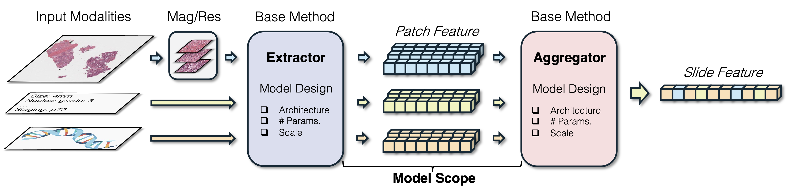

Survey Scope
PFM taxonomy anchored in the MIL workflow

IJCAI 2025 Survey Track
A companion site for the survey paper, collecting the official citation, taxonomy figure, pathology foundation model table, and evaluation matrix.
@inproceedings{ijcai2025p1193,
title={A Survey of Pathology Foundation Model: Progress and Future Directions},
author={Xiong, Conghao and Chen, Hao and Sung, Joseph J. Y.},
booktitle={Proceedings of the Thirty-Fourth International Joint Conference on Artificial Intelligence, IJCAI-25},
pages={10751--10760},
year={2025},
month={8},
note={Survey Track},
doi={10.24963/ijcai.2025/1193},
url={https://doi.org/10.24963/ijcai.2025/1193}
}
News
Survey Scope

Repository Index
| Model | Venue | Scope | Pretraining | Architecture | Data | Links |
|---|